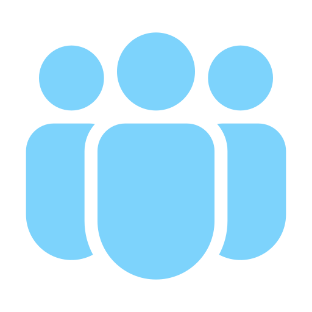
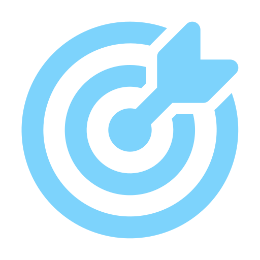
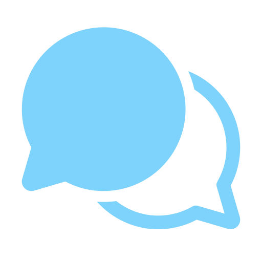

A collaborative space for California public sector teams to learn, share, and build with GitHub Copilot.

Statewide CommunityBringing together developers, technologists, and leaders across California state agencies.

Real-World ImpactPractical solutions to accelerate our mission.
Peer LearningShare challenges, wins, and lessons learned.

Microsoft & GitHub SupportAccess the latest updates, resources, and expertise.
Bring your questions
Share your wins. Listen. Learn. Level up.
The Guild is for more than developers — Power Platform, data & SQL, Python, notebooks, legacy modernization, PowerShell, infrastructure as code, QA, and testing all count. Bring a use case, a challenge, or a "how would you solve this?" moment.
Token Optimization: Getting More from Your AI Usage
Our launch session — improving agent quality while reducing unnecessary token usage and cost.
Oct 202621
Upcoming
Topic TBD
Help choose what we build together.
Nov 202618
Upcoming
Modernizing Legacy Apps with GitHub Copilot
Practical approaches to understand, refactor, and modernize legacy codebases.
Dec 202616
Upcoming
GitHub Copilot for Data & AI Developers
Accelerating data pipelines, notebooks, and AI/ML workflows with Copilot.
Jan 202720
Upcoming
GitHub Copilot for Infrastructure as Code
Using Copilot to author, review, and maintain Bicep, Terraform, and ARM templates.
Feb 202717
Upcoming
Testing with GitHub Copilot
Generating unit tests, test plans, and closing coverage gaps with agentic help.
Mar 202717
Upcoming
Secure Development with GitHub Copilot + GHAS
Pairing Copilot with GitHub Advanced Security for secure-by-default code.
Apr 202721
Upcoming
From Requirements to Code with GitHub Copilot
Turning specs and user stories directly into working, reviewable code.
May 202719
Upcoming
GitHub Copilot for Java & .NET Modernization
Upgrading frameworks, runtimes, and dependencies with agentic assistance.
Jun 202716
Upcoming
Agentic Development with GitHub Copilot
Multi-step agents, custom instructions, and orchestration patterns in practice.
Your idea?
Suggest a topic
What would YOU like us to cover?
Share topic ideas, use cases, or challenges and help shape future Build Guild sessions.
No sessions match that search. Try another topic or choose "All sessions."
September 16 meeting notes
Meeting: State of CA GitHub Copilot Build Guild — Launch Session Topic: GitHub Copilot Token Optimization: Getting More from Your AI Usage Presenters: Aparna Jain (host), Jason Cook, Kenedy Thorne
Generated by AI from the meeting recording. Be sure to check for accuracy.
Build Guild community launch
Aparna launched the California State Government GitHub Copilot Build Guild, describing it as a statewide community with three goals: learn, share, and build together — an exchange of practical use cases, lessons learned, and challenges, rather than a one-way vendor presentation. Future sessions will be shaped by participant feedback via a topic poll.
Monthly format: 30 minutes of featured topic & demo, 15 minutes for a community member to show what they built, and 15 minutes for open Q&A. Participants were encouraged to ask questions throughout rather than waiting for the final segment.
Audience & topics: The Guild is for more than application developers — planned subject areas include Power Platform, data & database development, SQL, Python, notebooks, legacy application modernization, PowerShell, infrastructure as code, QA, and testing.
Token optimization principles
Jason Cook explained that improving agent quality and reducing token cost are linked: choose models deliberately, provide only relevant context, split complex work into stages, and use deterministic controls to reduce rework.
Quality over counting: Focus on making every token count rather than simply minimizing token numbers — inaccurate or unclear intermediate results compound across multi-step workflows, so even high per-step accuracy can produce much lower end-to-end accuracy over many steps.
Model selection: Match model capability to task complexity. Higher-reasoning models suit research, planning, architecture, and hard debugging; mid-tier models suit implementation; lighter models suit repetitive edits, documentation, and routine work. Use Auto model selection as a default while learning which models fit which tasks.
Context management: Provide enough context to solve the task, but no more — narrow context to relevant files, modules, functions, or specs rather than sending an entire codebase.
Session & task boundaries: Start a new session after completing a feature or checkpoint, clear unrelated context, and break large work into smaller tasks instead of one extensive task list.
Deterministic guardrails: Add unit tests, linters, architecture conventions, and security scans to agent workflows for consistent early feedback and fewer repeated reasoning/correction loops.
Prompting & agent workflow design
Prompt construction: Use concise descriptions, imperative goals, and known context — identify the relevant class or function, describe triggering conditions and observed behavior, and specify the intended outcome. Add stop conditions requiring Copilot to ask before taking an uncertain path.
Staged execution: Separate complex work into research, planning, and implementation phases — a reasoning model investigates and plans, then a lower-cost coding model implements the specified changes.
Agent configurations: Persistent instructions should contain only small, stable, non-negotiable rules (they're injected every turn); custom agents define task-specific personas; skills encode repeatable actions; MCP tools retrieve dynamic external context.
Organization standards: Kenedy explained reusable agents can live at the org level for use across projects — keep org-wide instructions general (broad compliance) and project-specific testing rules/skills scoped to the relevant repo.
Agent composition: Agents can call other agents, letting an orchestrator delegate testing, documentation, user stories, or commits — each with its own assigned model or model range.
Learning from usage: An "agentic flywheel" — inspect incorrect or inefficient results, identify what guidance would have prevented the issue, and add that learning to instructions, specs, or skills for reuse.
Practical cost reduction techniques
Scripts instead of AI: Use ordinary scripts for deterministic, repeatable data prep rather than spending tokens on tasks code can do directly.
CLI versus MCP: Where a CLI or API can perform the same action, it may reduce static context and tool-call overhead compared to an MCP tool manifest.
Concise outputs: Ask Copilot to return only what's needed (e.g., file names, not full paths/timestamps/permissions) — output tokens are often more expensive than input context.
Usage analysis: Use Chronicle to review behavior across sessions and identify repeated instructions that should become persistent guidance; inspect context/usage in Copilot surfaces.
Targeted specifications: For large projects, create per-module spec files documenting purpose, invariants, and dependencies so Copilot can read specs instead of loading the whole codebase.
Orchestration cost controls
In response to a question about agent fleets, Kenedy and Jason explained that orchestration cost depends on task complexity, model choices, and the number of delegated agents. A practical pattern: use a stronger model to create a detailed plan and lighter models to execute subtasks, with a constrained (not indeterminate) number of agents. Auto model selection also provides a 10% discount on the model it chooses. Jason referenced a simple example — the "Ultra Light Orchestrator" — to be shared afterward.
Context, memory & data protection
Compaction: Compaction reduces conversational history to the important information for later turns and doesn't itself explicitly cost tokens — but frequent compaction is a signal to split work, start new sessions, or introduce orchestration.
Context ownership: Copilot manages the context window internally (behavior varies by model); users can manage it by clearing or starting a new session at a logical checkpoint. Session streaming is available in public preview via an enterprise admin setting.
Documentation volume: Every word supplied to the model consumes tokens — normal code documentation is fine, but documentation that greatly exceeds the code it describes is likely excessive.
Data handling: GitHub Copilot does not use prompts/data to train backend model providers and does not retain those records under applicable protections. For government use, use GitHub Copilot Business or Enterprise — the same guarantees do not apply to Free, Pro, Pro+, or Max plans.
What's next
Recording and slides shared with attendees (see links above).
A poll will go out to vote on topics for upcoming sessions.
Strong interest in a future session on GitHub Copilot agents — tools, models, and orchestration patterns.